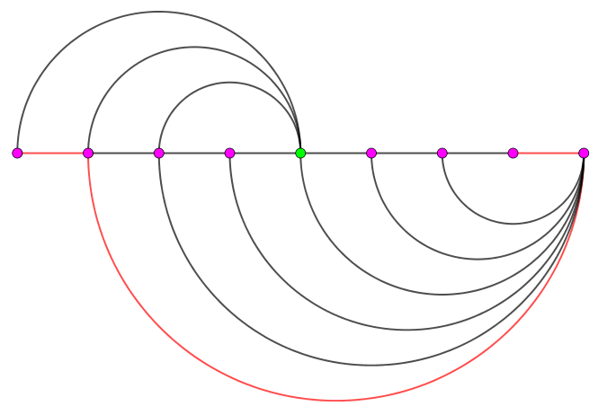

有 $n$ 个星球，它们的编号是 $1$ 到 $n$，它们坐落在同一个星系内，这个星系可以抽象为一条数轴，每个星球都是数轴上的一个点，特别地，编号为 $i$ 的星球的坐标是 $i$。
一开始，由于科技上的原因，这 $n$ 个星球的居民之间无法进行交流，因此他们也不知道彼此的存在。现在，这些星球独立发展出了星际穿越与星际交流的工具。对于第 $i$ 个星球，他通过发射强力信号，成功地与编号在 $[l_i, i-1]$ 的所有星球取得了联系 (编号为 $1$ 的星球没有发出任何信号)，取得联系的两个星球会建立双向的传送门。
对于建立了传送门的两个星球 $u, v$，$u$ 上的居民可以花费 $1$ 单位时间传送到 $v$，$v$ 上的居民也可以花费 $1$ 单位时间传送到 $u$，我们用 $\mathrm{dist}(x, y)$ 表示从编号为 $x$ 的星球出发，通过一系列星球间的传送门，传送到编号为 $y$ 的星球最少需要花费的时间。
现在有 $q$ 个星际商人，第 $i$ 个商人初始所在的位置是 $x_i$, 他的目的地是 $[l_i, r_i]$ 中的其中一个星球，保证 $l_i < r_i < x_i$ 。他会在这些星球中等概率挑选一个星球 $y$ (每个星球都有一样的概率被选中作为目的地)，然后通过一系列星球的传送门，花费最少的时间到达星球 $y$。商人想知道他花费的期望时间是多少？也就是计算
$$ \frac 1 {r_i - l_i + 1} {\sum_{y=l_i}^{r_i} \mathrm{dist}(x_i, y)} $$
第一行包含一个正整数 $n$ ($n \leq 3 \times 10^5$)，表示星球的个数。
第二行包含 $n - 1$ 个正整数，第 $i$ 个正整数为 $l_{i+1}$ ($1 \leq l_{i+1} \leq i$)，表示编号在 $\left[ l_{i+1}, i \right]$ 区间内所有星球已经与编号为 $i+1$ 的星球取得了联系，并且可以通过花费 $1$ 单位进行彼此的传输。
第三行包含一个正整数 $q$ ($q \leq 3 \times 10^5$)，表示询问组数。
接下来 $q$ 行，每行三个整数 $l_i, r_i, x_i$ ($1 \leq l_i < r_i < x_i \leq n$)，表示在 $[l_i, r_i]$ 这个区间中等概率选择一个星球 $y$，$\mathrm{dist}(x_i, y)$ 的期望。
对于每组询问，注意到答案必然是一个有理数，因此以 p/q 的格式输出这个有理数，要求 $(p, q) = 1$。
如果答案为整数 $m$，输出 m/1。
首先，容易知道，对于 $1 \leq x \leq v$，$\mathrm{dist}(x, v)$ 是关于 $x$ 单调递减的。
这可以由连边的方式得到，因为如果 $(u, v)$ ($u+1 < v$) 有边，则 $(u+1, v)$ 也有边。
因此这可以看作是一个类似树形的关系。即对于点 $v$，存在一个点序列 $(v_1, v_2, v_3, \cdots)$ 满足 $v > v_1 > v_2 > \cdots$ 且 $\left[ v_i, v_{i-1} \right)$ 的点到 $v$ 的距离均为 $i$。
不过对于不同的 $v$，这个序列的相对顺序也是有差异的。
注意下面这种情况：
可以发现，左数第 $8$ 个点到第 $1$ 个点的最短路径如红线所示，可以看出，它是先向右走再向左走的。且这种情况是唯一的最优解。
因此向右走这件事情确实比较头疼。我们来分析一下它的性质。
性质 1：向右走之前不会有向左走。
反之，由连边方式，如果向左走后向右走到了 $r$，则原来的点就已经与 $r$ 连边，则这些向左走的路径可以被去掉。
由性质 1 可以得到，一条最短路一定是若干次向右走后不停向左走得到的。
性质 2：不会有连续两次向右走。
设起点为 $u$，对于向右走后的向左走，设第一次走到 $u$ 左边的点时为 $v \to w$ ($w < u < v$)，则 $u, v$ 之间连边。因此前面所有的向右走都可以转化为 $u \to v \to w$，因此不会有连续两次向左走。
接下来，考虑对一个点 $v$，它到它左侧的点 $u$ ($1 \leq u < v$) 的步数分布。
若 $\mathrm{dist}(u, v) = 1$，则当且仅当 $l_v \leq u < v$。这个是毋庸置疑的。
接下来考虑什么时候有 $\mathrm{dist}(u, v) = 2$。
这个时候，它的第一步有了向右选择的机会。为了方便起见，我们寻找 $\mathrm{dist}(u, v) \leq 2$ 的条件。
因此结论是，$\mathrm{dist}(u, v) \leq 2$ 当且仅当存在 $[l_v, n]$ 的一个点到 $u$ 的距离不超过 $1$。
设 $l_v \leq x \leq n$，且 $\mathrm{dist}(u, x) \leq 1$。讨论一下即知，$x$ 与 $v$ 一定右边相连。因此结论成立。逆命题是显然的。
同理可以知道，$\mathrm{dist}(u, v) \leq k$ ($k \geq 2$) 的充要条件为，存在 $x \in [l_v, n]$，满足 $\mathrm{dist}(u, x) \leq k - 1$。
因此我们需要维护的是，对于每一个 $v$，$[v, n]$ 的所有点跳一步可以到达的最左端点 (记作 $v'_1$)，以及跳两步可以到达的最左端点 (记作 $v'_2$)，……。
可以通过倍增记录端点，以及对应的权值 $\sum u \cdot w_u$。其中 $w_u = k \Leftrightarrow u \in \left[ v_k, v_{k-1} \right)$。
最终计算时，只需单独处理 $k = 1$ 的情形，然后令 $x_i \gets l \left[ x_i \right]$，，直接根据上面的等价条件转化即可。
时间复杂度 $O \left( (n + q) \log n \right)$。
#include <bits/stdc++.h>
#define N 300005
#define LN 20
#define ID isdigit(c = *next++)
struct Istream {
char *next, buf[20030731];
void init(FILE *f = stdin) {fread(buf, 1, sizeof buf, f); next = buf;}
Istream & operator >> (int &x) {
int c; x = 0;
for (; !ID; ) if (!~c) return *this;
for (x = c & 15; ID; x = x * 10 + (c & 15)) if (!~c) break;
return *this;
}
} cin;
struct Ostream {
char *next, buf[20030731], _buf[34];
Ostream () {next = buf;}
void flush(FILE *f = stdout) {fwrite(buf, 1, next - buf, f); next = buf;}
Ostream & operator << (long long x) {
if (!x) return put(48), *this;
int i;
for (i = 0; x; x /= 10) _buf[++i] = x % 10 | 48;
for (; i; --i) put(_buf[i]);
return *this;
}
Ostream & operator << (char c) {return put(c), *this;}
void put(char c) {*next++ = c;}
} cout;
typedef long long ll;
int n, q;
int l[N];
int P[LN][N], *p = *P;
ll s[LN][N];
inline void down(int &x, const int y) {x > y ? x = y : 0;}
ll solve(int u, int v) {
if (u >= l[v]) return std::max(v - u, 0);
int i, cur = 1; ll res = v - l[v]; v = l[v];
for (i = LN - 1; i >= 0; --i)
if (P[i][v] > u) {
res += s[i][v] + (ll)(v - P[i][v]) * cur;
cur += 1 << i; v = P[i][v];
}
return res + (v - u) * (cur + 1);
}
int main() {
int i, u, v; ll num, den, d;
cin.init();
cin >> n;
for (i = 2; i <= n; ++i) cin >> l[i]; p[n + 1] = INT_MAX;
for (i = n; i > 1; --i) {
p[i] = std::min(l[i], p[i + 1]);
s[0][i] = i - p[i];
}
for (v = 2; v <= n; ++v)
for (i = 0; i < LN - 1; ++i) {
P[i + 1][v] = P[i][P[i][v]];
s[i + 1][v] = s[i][v] + s[i][P[i][v]] + ((ll)(P[i][v] - P[i + 1][v]) << i);
}
for (cin >> q; q; --q) {
cin >> u >> v >> i;
num = solve(u, i) - solve(v + 1, i);
d = std::__gcd(num, den = v - u + 1);
cout << num / d << '/' << den / d << '\n';
}
cout.flush();
return 0;
}
坑1：注意常数，比如 $\log$ 不用跑满，输入输出最好用 IO 优化。